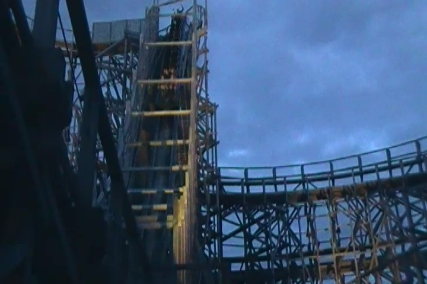
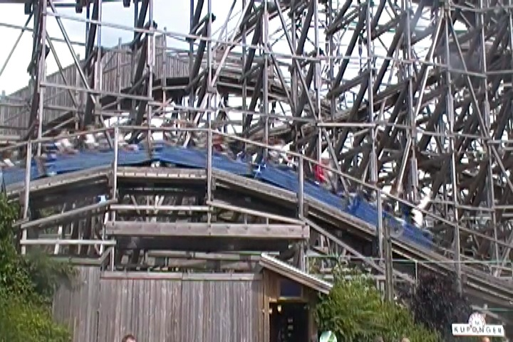
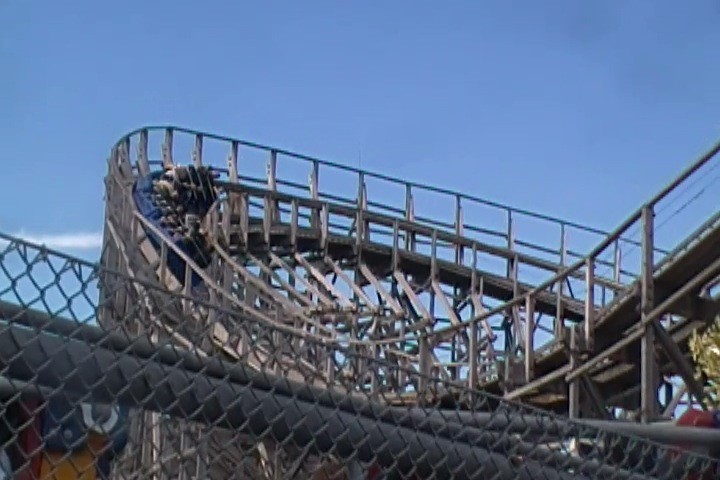
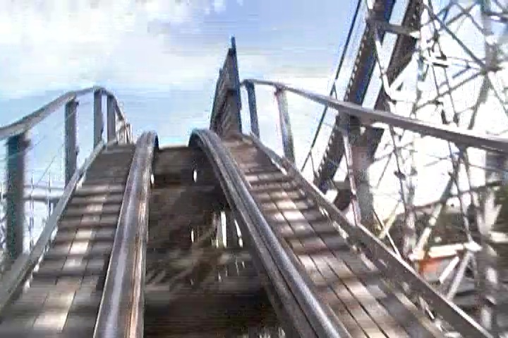
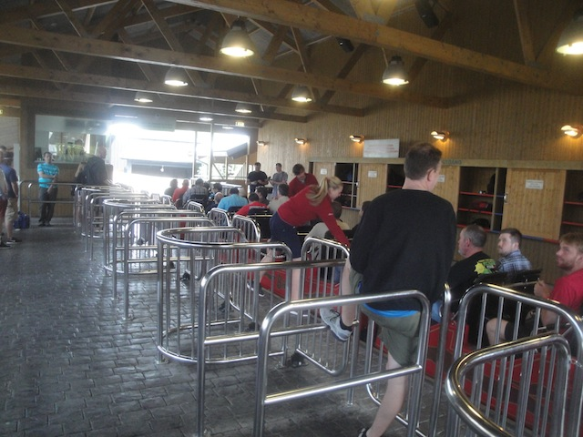
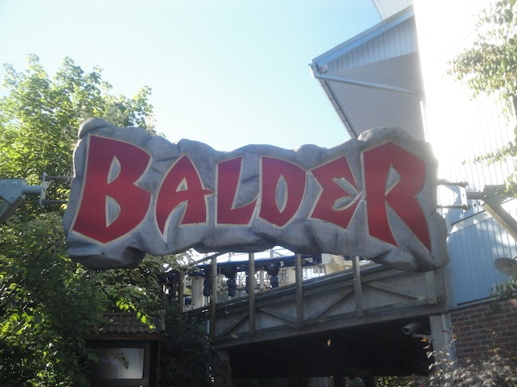

| |
Balder Review

We're here at Liseberg and today, we're going to be reviewing Balder. The park's wooden coaster and one of the best wooden coasters on the planet. Now this may seem surprising as Balder is not that big. Granted, Balder is not the first wooden coaster to prove that small wooden coasters can provide amazing rides. I can think of several other wooden coasters that prove that same point. Plus, it's not that tiny, and you can notice a lot of airtime hills, as well as some steep drops. So you expect a good ride. But if you don't know that it's an Intamin Pre-Fab, then I don't think you know just how good this ride is going to be. So let's hop in the trains, buckle the seatbelts, pull down the lapbars, and away we go. We roll around a turn out of the station and head up the lifthill. Now it's a cable lifthill, so you don't get the traditional clank clank clank up the lifthill. We look around and get a good view of Balder, Liseberg, and the rest of Gothenburg while climbing on up. But soon enough, we reach the top, and head around a banked turn. We pass by a sign that reads 70 degrees. Gee, I wonder how steep the drop is. We head down this banked helix before dropping straight into the first drop. 70 DEGREES!!! We drop down to the ground, gaining a lot of speed. We then head up a big hill and BAM!!! AIRTIME!!! This is some long sustained floater air, and it is freaking awesome! We then dip down and swoop into another banked turn, which provides us with some good laterals. We then head into another hill, we rise up, fly out of our seat, and then drop down into a tunnel. YAY!!! TAKE THE TUNNEL!!! Our asses are out of our seats the entire way down, until we break free and escape said tunnel. This leads us into another banked turn that we slam through, providing us with some pretty good laterals, and we're still roaring on, not losing much speed. We then head into two airtime hills. SLAM!!! Ejector air! And to make this even better, we get some cool headchoppers here. So you just might cover your head here. And then SLAM!!! More ejector air. We then head around another cool banked turn, and this one is underneath the last banked turns. So there's some more cool headchoppers here. We then head up a small hill and TAKE ANOTHER TUNNEL!!! The tunnel lasts for as long as the drop, so it's not very long. But you don't even really notice it since you're getting ejected out of your seat. We then head around another banked turn, these things are pretty cool. And straight into MORE AIRTIME!!! Boing! Out of your seat. Boing! Out of your seat yet again. We head around a third banked turn, also featuring more headchoppers. We head through some more bunny hops. WEE!!! WEE!!! Head through a slight turn, BAM!!! More airtime! And straight into the brakes. Damn. This thing is an airtime MACHINE. Literally, the whole job of this ride is to throw you out of your seat, and it does a pretty damn good job at it. So you can see why this ride is ranked so highly. Yeah, there are a couple other woodies I prefer, but there's no denying that this is one of the best wooden coasters in the world, and if you're at Liseberg, I highly recommend getting lots of rides on Balder.
10/10
Location: Liseberg
Opened: 2004
Built by: Intamin
Last Ridden: June 22, 2014
Balder Photos








Home
|